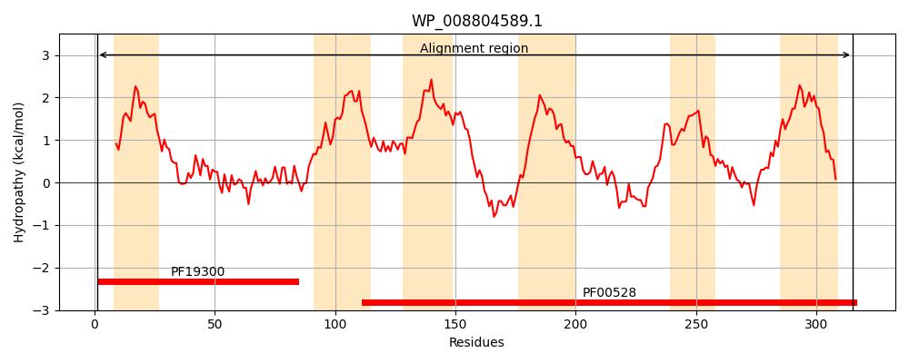
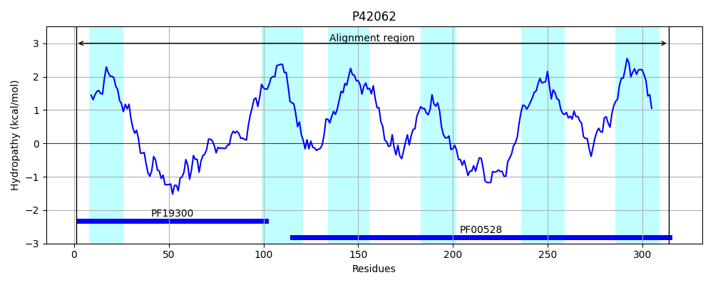
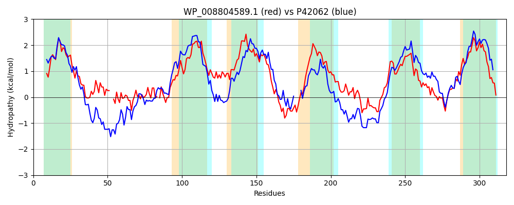

Hit Accession: P42062
Hit TCID: 3.A.1.5.20
Hit Description: gnl|BL_ORD_ID|10434 gnl|TC-DB|P42062|3.A.1.5.20 Oligopeptide transport system permease protein appB - Bacillus subtilis.
Mach Len: 318
e:0.000000
Query TMS Count : 6
Hit TMS Count: 6
TMS-Overlap Score: 5.700000
Predicted Substrates:CHEBI:7755;oligopeptide
BLAST Alignment:
Score: 615 , Bit scores: 241 bits, E-value: 2.0e-78, Alignment length: 318, Percentage identity: 40
Query: 1 MKNFILRRLLQTLPMLLLASFIIFMLFAKTPGDFIDGNITLTAARAAELKAI--YGLDQPLFTRYLHWLGQLLRGDLGFSLQYQ-IPVSQLLNQYIWNSFLLASVALVFYWGIGLAVGVVSALRPGSWFDHLVSVAVFAAMSFPTFFLCLLLIKWFAVDLHWLPVGGMTNTGSDESGWQYVLQVAAHLALPVLALVMLQAGSLTRYVRASMLDVVKMDFIRTARAKGLQERTVILKHALRNALLPIITLLGFELPGLFSGAIITEKVFNWPGAGHIHIDSLAARDYPVLMGFTLFLAVLTIVGNLLADVLYAWADPRI 315
M +I+RR L ++P+LL + + F++ PGD + + ++A + I YGL+ P + +YL WLG +++GD G S+ + PVS+L+ + N+ LL V+ + I + GV+SA RP S D+ ++ F ++ P F+ L+LI +V+L W P GG+ ++ + + HL LP L LTRY R++MLDV+ D+IRTARAKG +E V+ KH LRNALLP+IT+ G +P G+++ E++F WPG G + +DS RDYPV+M T+ AVL +VGNL+AD+LYA DPRI
Sbjct: 1 MAAYIIRRTLMSIPILLGITILSFVIMKAAPGDPMTLMMDPKISQADREQFIEKYGLNDPQYVQYLKWLGNMVQGDFGTSIVRKGTPVSELIMARLPNTLLLMLVSTILALMISIPFGVLSAKRPYSKIDYGITFTSFIGLAIPNFWFGLILIMVLSVNLGWFPTGGVETLNTEFN----IFDRIHHLILPAFVLATADMAGLTRYTRSNMLDVLNQDYIRTARAKGFKENRVLFKHGLRNALLPVITIFGLMIPSFIGGSVVVEQIFTWPGLGKLFVDSAFQRDYPVIMAMTVISAVLVVVGNLIADILYAIVDPRI 314 | Protein Hydropathy Plots: |
|---|
|  |  |
Pairwise Alignment-Hydropathy Plot:
|
|---|
|  |